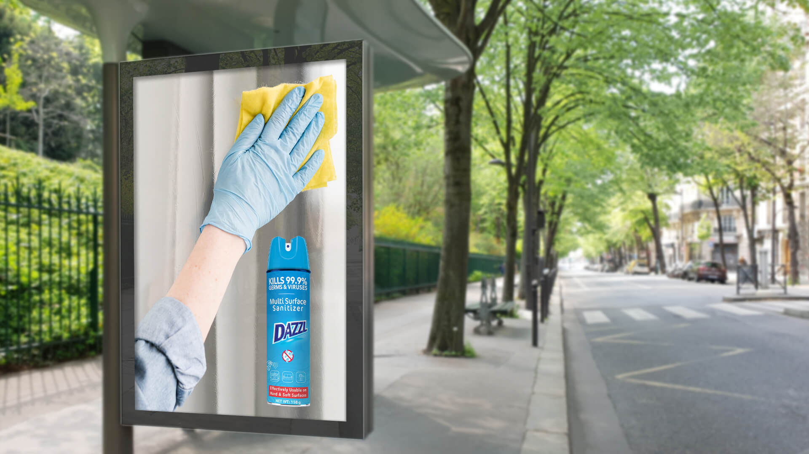
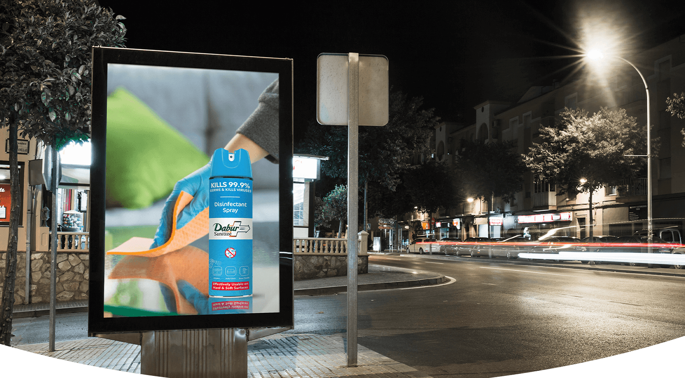

Communicate sanitizing—not simply cleaning—without relying on a long technical explanation.
← Back to workEvery touchpoint.
Dazzl · Multi-Surface Sanitizer
Every touchpoint.
One clear defence.

Project overview
Show the action.
Make protection tangible.
Dazzl needed a product-led print expression for a multi-surface sanitizer designed for everyday household cleaning moments.
The artwork turns an invisible hygiene benefit into an instantly recognisable scene: a gloved hand, a wiping action, a hard surface and the product standing clearly beside the task.
- Deliverable
- Master Print
- Extension
- Outdoor Displays
- Benefit
- Multi-Surface Hygiene
- Message
- Kills 99.9% Germs
The communication challenge
An invisible threat.
A visible solution.
Make the product feel relevant across the many hard and soft surfaces people encounter every day.
The creative idea
Protection you can
see in action.
Instead of visualising germs, the print focuses on a universally understood hygiene gesture. The wipe creates movement while the upright aerosol pack provides immediate brand and category recognition.
Blue communicates assurance and cleanliness; the yellow cloth creates contrast; and the red claim panel brings the performance message to a decisive close.
The visual hierarchy
Read quickly.
Remember clearly.
Action first
The wiping gesture explains the usage before a word is read.
Product central
The tall aerosol silhouette remains prominent and easy to identify.
Claim visible
The germ-kill message sits high on pack for rapid benefit recognition.
Surfaces implied
The everyday setting expands the relevance beyond a single cleaning task.
Outdoor applications
A hygiene message
built for the street.
The vertical creative retains its complete product and action story across daylight and night placements. Both supplied applications are shown at their original ratio without cropping.


The outcome
One everyday action.
One immediate benefit.
The system gives Dazzl a direct, product-forward outdoor presence—connecting the act of wiping with a clear sanitizer proposition and dependable household protection.
Instant comprehension
Action and product communicate the category at a glance.
Benefit recall
The performance claim remains visible within the product silhouette.
Everyday relevance
The scene makes multi-surface hygiene feel practical and familiar.
Spray. Wipe.Move with confidence.
Need a product benefit people grasp instantly?